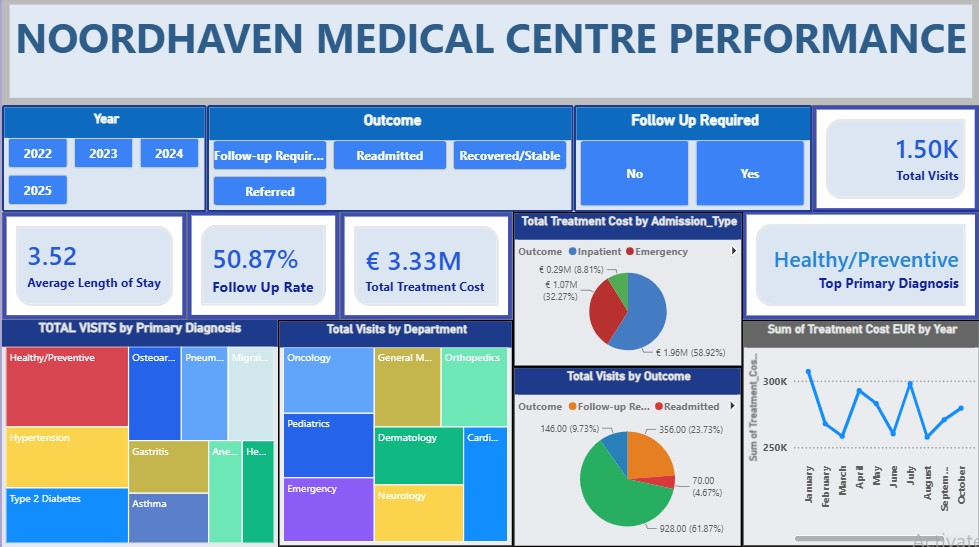
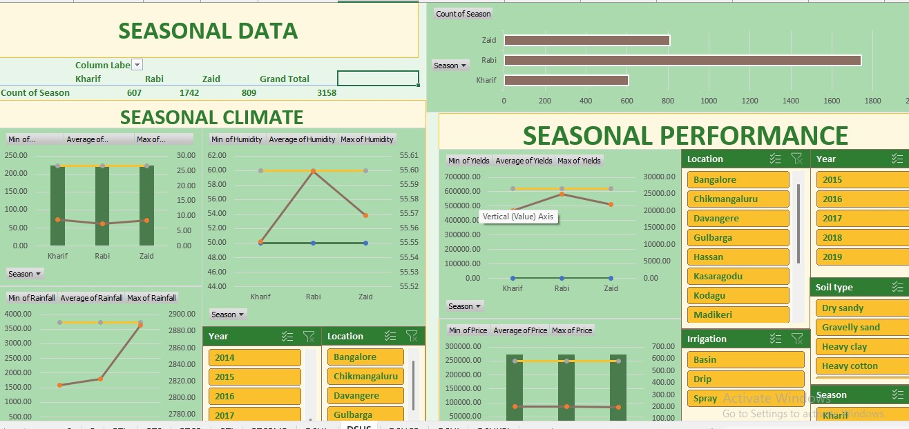

Ngobiri Joshua
PORTFOLIO
I am an entry-level Data Analyst with a strong interest in transforming raw data into meaningful insights that support better decision-making.
My skill set includes SQL, Python, Excel, and Power BI, with experience in data cleaning, analysis, visualization, and building interactive dashboards. I enjoy exploring datasets, identifying patterns, and presenting findings in a clear and understandable way.
This portfolio brings together projects that demonstrate my practical application of data analytics concepts and tools. Each project reflects my approach to working with data—from preparing and analyzing raw information to communicating insights through reports and visualizations.
I am continuously developing my technical and analytical skills and looking forward to applying them to real-world business problems.

Noordhaven Medical Centre
An end-to-end healthcare analytics project involving data preparation in Excel, transformation and modeling in Power BI, and the development of DAX-driven interactive dashboards. The report explores patient demographics, clinical patterns, healthcare costs, hospital operations, and patient outcomes.
Tools: Excel · Power Query · Power BI · DAX
Skills: Data Cleaning · Data Transformation · Data Modeling · DAX · KPI Development · Data Visualization · Drill-through Reporting
.

Agricultural Seasonal Data Analysis
An Excel-based analysis of crop performance across seasons, locations, soil types, irrigation conditions, and environmental factors. The project involved data preparation, derived performance metrics, PivotTables, interactive slicers, conditional formatting, visual analysis, and the development of four analytical dashboards.
Tools: Excel
Skills: Data Analysis · Excel Functions · PivotTables · Data Visualization · Dashboard Development · Derived Metrics · Interactive Filtering